Stage 1: Enterprise-Grade LLM Activation with Mule Inference Connector
This stage focuses on creating an enterprise-ready AI capability designed to be consumed by applications. Instead of building a UI-bound demo, we build and deploy an LLM-powered application using the Mule framework, independent of any specific user interface.
Introduction & Technical Architecture
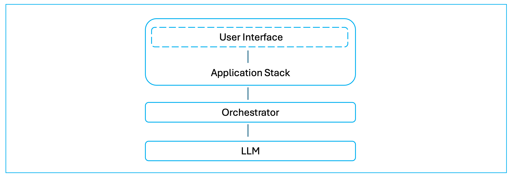
Modern LLM-driven systems separate user interaction, application responsibility, and AI execution into distinct layers.
In this workshop module, we use the above generative AI application architecture as a reference point, not as something we fully implement. Rather than building a user interface, we focus on delivering a core AI capability that fits cleanly into the architecture shown at the top of this document.
In a complete LLM-driven application, the user interface is responsible only for interaction — collecting user input and displaying responses. This interface could be a web UI, a mobile app, a backend service, or a Python application (e.g., with a Streamlit library based UI). The choice of UI is intentionally left open in this stage.
The application stack sits behind the user interface and controls application behavior. This layer is responsible for structuring requests, managing conversation state if required, deciding what context is sent to the model, handling errors, and invoking downstream capabilities. In this workshop, the application stack is represented conceptually rather than implemented, because our goal is to build the AI execution layer it would call.
When the application stack requires an AI response, it does not call the language model directly. Instead, it sends a request to Mule, which acts as a stateless orchestrator. Mule executes inference using the Mule Inference Connector, applies configured model parameters, and provides secure, observable access to the underlying LLM (Groq). Mule does not manage conversational state; it executes each inference request exactly as it is received.
This separation is intentional. The user interface handles interaction, the application stack handles behavior, and Mule handles AI execution. By isolating inference execution behind Mule, the AI capability becomes reusable, governed, and independent of any specific application or UI technology.
At this stage, the agent has intelligence but no enterprise context. There is no grounding, no access to internal systems, and no business logic. This allows you to clearly observe what managed LLM inference provides on its own, and where its limitations begin.
In more advanced systems, additional architectural components are introduced — such as a task planner (reasoning engine), context data stores (for example, vector databases), and prompt management layers — along with expanded governance and observability. Those elements are intentionally deferred to later stages so the foundational execution model remains clear.
How Mule Supports AI Development
MuleSoft provides a suite of Anypoint AI Connectors that integrate Large Language Models (LLMs) and Vector Stores directly into existing business workflows. They provide a unified interface for developers to build and manage enterprise-grade AI agents that can access both Salesforce and non-Salesforce data.
By abstracting the technical complexities of different AI technologies, these connectors simplify the development of autonomous agents and coordinate interactions between various models and enterprise applications.
These Mule AI connectors also standardize how AI components interact and collaborate, leading to more integrated and secure AI solutions across the organization. This standardization ensures that agents can reliably access up-to-date data and perform consistent actions within a governed framework.
The suite available in Anypoint Exchange evolved from the MuleSoft AI Chain project, an open-source initiative that allows developers to build and manage agents natively within the Anypoint Platform. This relationship allows MuleSoft to apply the same full-lifecycle management principles to AI agents that it has traditionally used for APIs and integrations.
Hands-On: Building an Enterprise Grade Gen AI App
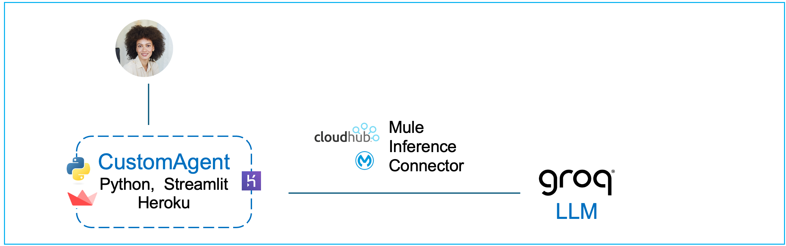
Use Mule Anypoint Studio to Create a Mule Project with Inference Connector
For this workshop, please sign in and start your Windows App - this app is provided to you by your instructor and contains the virtual machine with MuleSoft Anypoint Studio installed. This is the tool we shall use in this section.
In the Mule Virtual Machine, provided to you open the Mule Anypoint Studio.
To save time, instead of assembling the flows component-by-component, we’ve provided a packaged JAR file in which the key steps have already been completed. You’ll import it into Anypoint Studio, run it locally, and deploy it to CloudHub. This section walks you through the entire process end-to-end—from import to deployment and testing.
Although you are using a pre-packaged JAR rather than configuring each connector manually in Anypoint Studio, we still explain every part of it in the sections below, so you understand exactly how it works and how to apply the same approach in your own projects.
In your Mule VM (using the Chrome browser) download the following JAR file: Download JAR File
Typically it will download the file in the following locations inside the VM: C:\Users\workshop\Downloads
Open Mule Anypoint Studio in your VM (Windows App provided to you by your instructor).
Click on File → Import and find the downloaded JAR (stage1-lab-inference-chat.jar) on your VM.
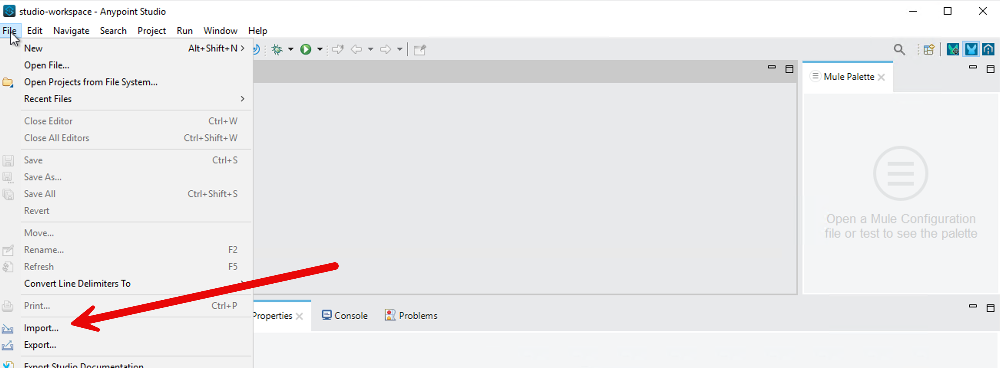
Choose the import wizard → Anypoint Studio → Packaged Application
You can monitor the import progress in the bottom right corner of the Anypoint Studio.
Once import completes, a project gets created in Anypoint Studio with the configurations packaged in the JAR file.
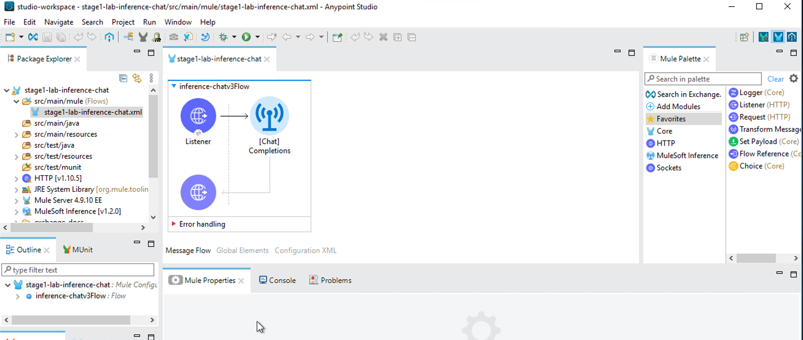
Click on /src/main/resources/config.properties in your project in Anypoint Studio.
Put in your Groq API key value on the first line. Then save the file (File → Save).
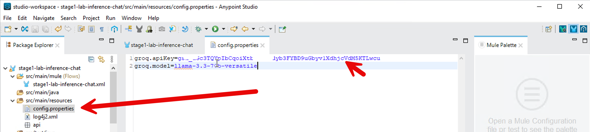
Now let’s test your project locally. Right click on your project in the Mule Anypoint Studio and click on Run As → Mule Application.
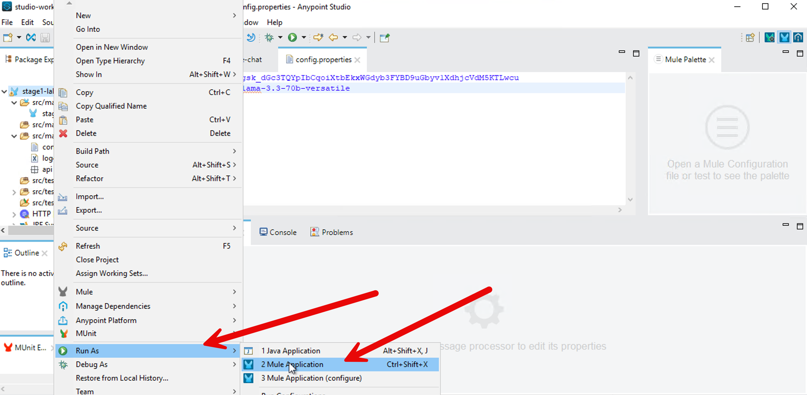
You should see Deployed in the bottom screen in Mule Anypoint Studio.
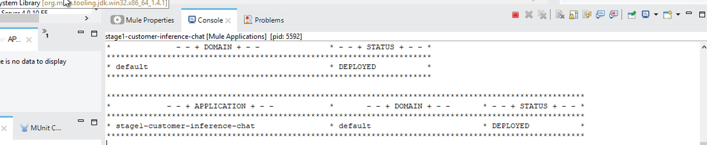
Send a message to the LLM via your Inference Connector:
Copy paste this in your windows shell.
curl -X POST http://localhost:8081/chat -H "Content-Type: application/json" -d "[{\"role\":\"user\",\"content\":\"Capital of Germany?\"}]"You should see the following output.
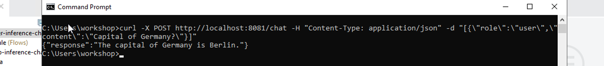
Now let’s deploy your project to CloudHub.
Right click on your project → Anypoint Platform → Deploy to CloudHub
It will bring up a browser window inside your Anypoint Studio - authenticate with your Mule trial username.
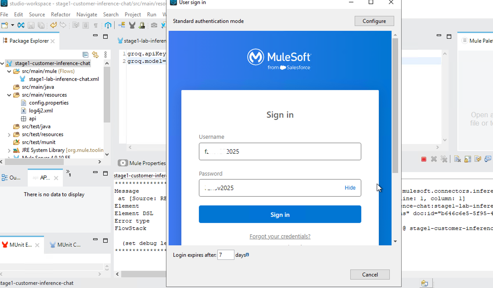
Select No for creating a password hint.
After sign-in, go back to your project - Right Click → Anypoint Platform → Deploy to CloudHub - select Sandbox
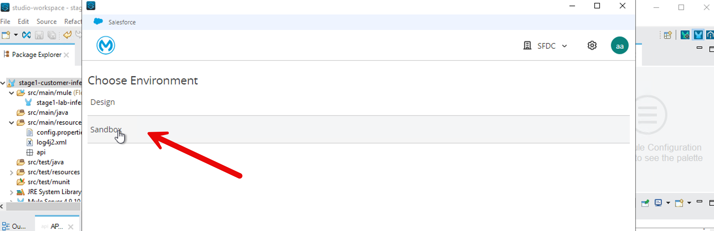
In the next page, click on Properties and put in your groq.apiKey, groq.model and Connection.
groq.model=llama-3.3-70b-versatile
groq.apiKey={yourAPIKEY}
Connection=groq
Following is a screenshot of the CloudHub property page.

Then press Deploy Application button.
It takes about 10 minutes to deploy.
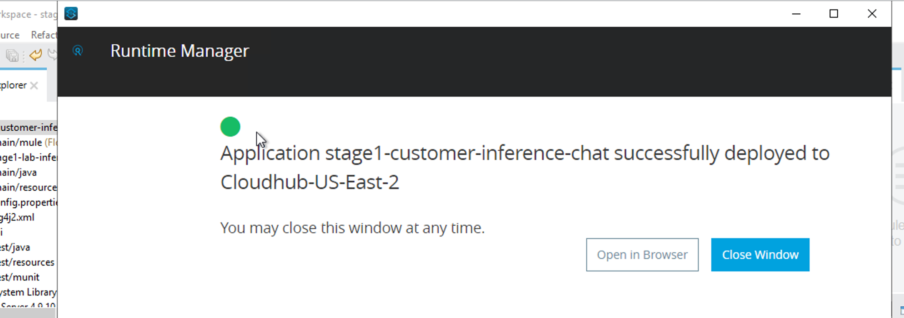
To monitor deployment on CloudHub - go to mulesoft.com and login with your trial account → Runtime Manager
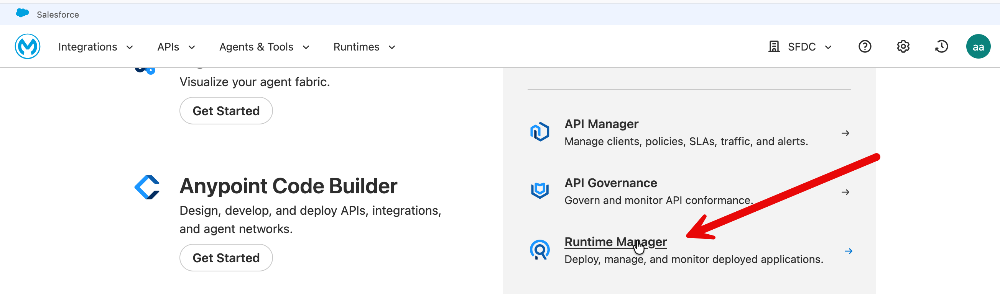
You should see your application running on CloudHub Runtime Manager.
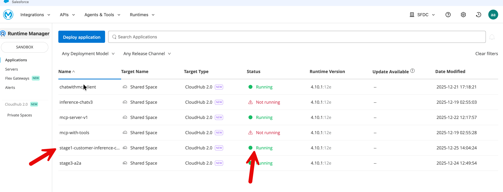
Let’s test your application.
Click on your application and on your application page copy the public endpoint.
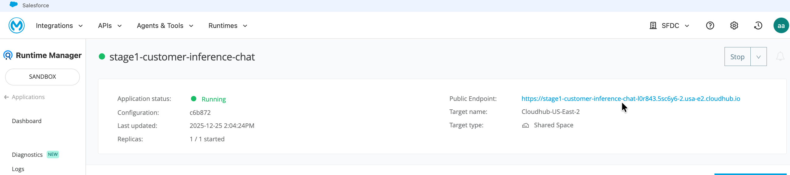
Let’s send a question to your application via CURL from your Windows command shell. Remember to replace the URL in the following command with your public endpoint.
curl -X POST https://stage1-customer-inference-chat-l0r84xyz.usa-e2.cloudhub.io/chat -H "Content-Type: application/json" -d "[{\"role\":\"user\",\"content\":\"Capital of Germany?\"}]"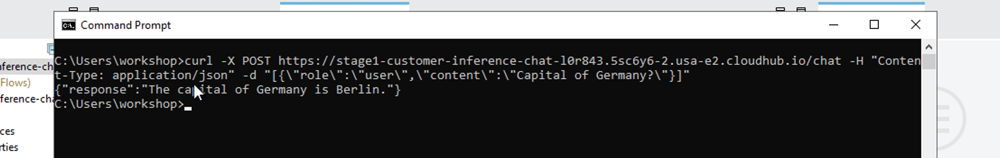
We have built a UI-based client you can use to test your headless agentic capability.

https://thin-chat-client-085335f023d7.herokuapp.com/
- Enter your stage1 cloudhub public endpoint in the "Agent Endpoint (CloudHub)" box.
- Select Stage 1 (Inference Only) as shown in the screenshot.
This GUI client lets you interact with the headless agent powered by the Mule Inference Connector on CloudHub.
What You Have Accomplished
In this section we focused on building an enterprise-ready AI capability that applications can consume — not a UI-bound demo.
By completing Stage 1, you have built and deployed a production-style, enterprise-grade LLM inference endpoint using Mule.
You did not build a UI in this stage — intentionally. Instead, you focused on creating a clean, reusable AI capability that can be consumed by any application.
Specifically, you have:
- You exposed a language model as a stable HTTP API (
POST /chat) hosted inside Mule. This endpoint accepts structured chat input and returns a model response, making it suitable for use by web applications, backend services, agents, or automation workflows. - You executed LLM inference using the Mule Inference Connector, rather than calling the LLM provider’s REST API directly. This shifts AI execution from ad-hoc application code into a managed enterprise platform.
By doing this, you gained several concrete enterprise capabilities automatically:
- CloudHub networking: The inference endpoint runs inside Mule’s managed runtime, removing the need to design custom networking, ingress, or egress for AI traffic.
- Secure outbound connectivity: Credentials and outbound calls to the LLM provider are handled by Mule configuration and runtime controls, not embedded in client applications.
- Enterprise authentication and isolation: Access to the inference capability can be governed by environments, deployments, and platform controls rather than individual developer credentials.
- Managed scaling: Inference execution scales as part of the Mule runtime, independently of the client applications that consume it.
- Standardized agent hosting: The LLM is now hosted in a consistent execution fabric that can later support multiple agents, tools, and workflows.
- Agentforce compatibility: By running inference through Mule, this endpoint aligns with the same execution layer used by Salesforce Agentforce, enabling future multi-agent and agent-to-agent patterns without architectural rework.
- Observability: Requests, responses, latency, and failures are visible through Mule’s runtime monitoring and logging, which is difficult to achieve reliably with direct API calls.
- Governance: AI execution is now subject to enterprise deployment policies, environment separation, and operational controls.
At this stage, the capability has intelligence but no enterprise context. It is not grounded in internal data, does not call backend systems, and does not execute business actions. This is intentional. You now have a clean, well-defined baseline that demonstrates what managed LLM inference provides on its own.
This endpoint can now be wrapped by any application — for example, a Python application with a Streamlit-based UI, a web frontend, an internal service, or another agent — without changing the Mule implementation.
This completes Stage 1 and sets the foundation for adding grounding, enterprise data, and multi-agent orchestration in the next stages.
How To Build It: Step-by-Step Guide
Step 1 — Create your first Mule project
- Open Anypoint Studio
- File → New → Mule Project
- Project name: inference-chat
- Runtime: Mule 4.9.x (or latest available)
- Click Finish
Studio will generate a project skeleton.
Step 2 — Configure a Source
In a Mule application, a flow always starts with a source. A source is the component that waits for an external event and starts the flow when that event occurs.
In this project, the external event is an HTTP request sent by the Python application.
When a user submits a message, the Python application sends an HTTP request to Mule. The HTTP Listener is the component that receives this request.
HTTP > Listener:
- Listens on a configured host and port
- Starts the Mule flow execution each time an HTTP request is received
- Makes the request payload available to the flow
Once the HTTP Listener receives the request, the flow routes the request to the Mule Inference Connector, which executes the inference against the configured language model and returns the response.
In simple terms: The HTTP Listener receives the user request, and the Inference Connector handles the AI execution.
To configure an HTTP > Listener source, follow these steps:
- In Mule Palette, select HTTP > Listener.
- Drag Listener to the Studio canvas.
- On the Listener configuration screen, optionally change the value of the Display Name field.
- Specify a value for the Path field (You can put in /chat as the path).
- Click the plus sign (+) next to the Connector configuration field to configure a global element that can be used by all instances of the HTTP > Listener source in the app. Select default values if needed.
- On the General tab, specify the connection information for the connector.
- On the TLS tab, optionally specify the TLS information for the connector.
- On the Advanced tab, optionally specify reconnection information, including a reconnection strategy.
- Click Test Connection to confirm that Mule can connect with the specified server.
- Click OK.
Step 3 — Select the Inference Connector for Your Mule Project
To enable inference in your Mule application, add the Mule Inference Connector to your Mule project. When you add the connector, Anypoint Studio automatically:
- Adds the connector’s namespace and schema location to your Mule XML configuration
- Adds the required dependencies to your project’s
pom.xmlfile
This allows your Mule flow to invoke a language model for inference in a managed, secure, and observable way.
- In Mule Palette, click (X) Search in Exchange. You may be need to authenticate to Mule using the Mule trial account you have created earlier.
- In Add Dependencies to Project, type
mulesoft inferencein the search field. - Click MuleSoft Inference Connector in Available modules.
- Click Add.
- Click Finish.
Step 4 — Add a Connector Operation to the Flow
When you add a connector operation to your flow, you are specifying an action for that connector to perform.
To add an operation for MuleSoft Inference Connector, follow these steps:
- In Mule Palette, select MuleSoft Inference Connector and then select the operation to add.
- Drag the operation i.e., [Chat] Completions - onto the Studio canvas, next to the source (Http connector).
When you configure the connector, configure a global element - configuring a global element requires you to provide the authentication credentials that the connector requires to access the target inference provider.
Following are the main values you need for global element configuration:
- Connection: Groq
- model name: llama-3.3-70b-versatile
- apiKey= your Groq api key
Click on Test Connection.
Click Ok.
Step 5 — Test locally
What our application in Anypoint Studio does: We created an API that exposes POST /chat and delegates inference to the Inference Connector.
Let’s test it now.
Select your project in the left sidebar in Mule Anypoint Studio. Then right click and select ‘Run as - Mule Application.’
In a Mac terminal window paste this curl command:
curl -X POST http://localhost:8081/chat \
-H "Content-Type: application/json" \
-d '[
{
"role": "user",
"content": "What is the capital of Germany?"
}
]'You should see the following response: {"response":"The capital of Germany is Berlin."}
Windows: If you are using Windows (e.g., your Mule VM is Windows)- use the following CURL command.
curl -X POST http://localhost:8081/chat -H "Content-Type: application/json" -d "[{\"role\":\"user\",\"content\":\"Capital of Germany?\"}]"Step 6 — Deploy to CloudHub
Deploy on Cloud
- Right-click project → Anypoint Platform → Deploy to Cloudhub
- Confirm the username you are logged in as is your trial account username.
- Select Sandbox
- Choose:
- Runtime: Mule 4.9+
- Worker size: 0.1 vCore is enough for demo
In the Properties tab, set the environment variables as follows:
groq.apiKey= This is your groq api key
Connection= Groq
groqModelName = llama-3.3-70b-versatile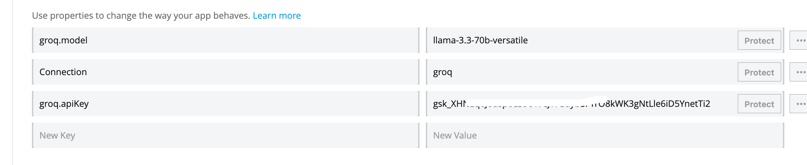
Deploy Application
This takes time and you can monitor the progress in Anypoint Studio console.
Now login to MuleSoft using your trial account in the browser - and navigate to Runtimes → Runtime Manager → Sandbox.
Click on your application (it should say Running).
Copy the public endpoint that you see on top right of the application page, e.g., https://inference-chat-xyz111.usa-e2.cloudhub.io/
Test your application
In a terminal window paste this curl command:
curl -X POST "https://inference-chat-xyz111.usa-e2.cloudhub.io/chat" \
-H "Content-Type: application/json" \
-d '[
{
"role": "user",
"content": "What is the capital of Germany?"
}
]'You should see the correct response displayed in your terminal window.
We have built a UI-based client you can use to test your headless agentic capability.
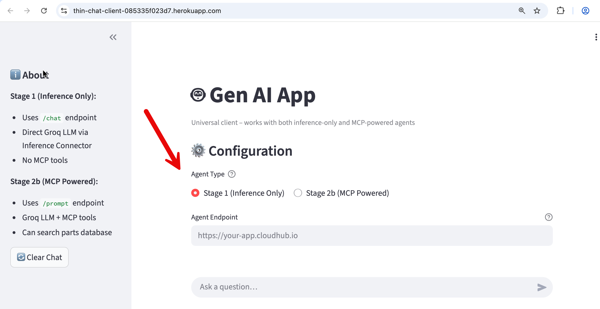
https://thin-chat-client-085335f023d7.herokuapp.com/
- Enter your stage1 cloudhub public endpoint in the "Agent Endpoint (CloudHub)" box.
- Select Stage 1 (Inference Only) as shown in the screenshot
This GUI client lets you interact with the headless agent powered by the Mule Inference Connector on CloudHub.
Appendix
Deploy on Cloudhub Directly from JAR File
In this scenario, we completely skip the Mule Anypoint Studio tool.
We import the instructor provided JAR file directly in Cloudhub in your Mule trial account.
- Runtime Manager → Deploy Application
- Choose Sandbox (not Design)
- Choose a name for your application e.g., stage1-inference-chat
- Choose a file: Upload
x.jarwhere x is the name of the jar file provided by the instructor. - In the properties tab in Cloouhub fill in the following values
Set in your values for:
groq.model=llama-3.3-70b-versatilegroq.apiKey=your_key
Deploy.
This takes time and you can monitor the progress in Anypoint Studio console.
Now login to MuleSoft using your trial account in the browser - and navigate to Runtimes → Runtime Manager → Sandbox.
Click on your application (it should say Running).
Copy the Public Endpoint that you see on top right of the application page.
e.g., https://inference-chat-xyz111.usa-e2.cloudhub.io/
Test your application.
In a Mac terminal window paste this curl command (replace the endpoint with your own endpoint):
curl -X POST "https://inference-chat-xyz111.usa-e2.cloudhub.io/chat" \
-H "Content-Type: application/json" \
-d '[
{
"role": "user",
"content": "What is the capital of Germany?"
}
]'You should see the correct response displayed in your terminal window.
Misc
Export your project: Generate JAR from Anypoint Studio:
- Open the working project in Anypoint Studio
- Make sure the app:
- Deploys locally
- Works with
/chator/x
- Right-click the project
→ Export - In the Export screen, type Mule to ‘Select an export wizard’
- Choose: Mule Deployable Archive
- Click Next
- Choose output folder
- Finish
You will get: x.jar where x is the name of your current project.
Import a JAR file in Anypoint Studio
When creating a new Mule project, you can skip the build, you can simply import a JAR file from a previously completed project. E.g., your instructor may have provided you with a JAR file.
- In MuleSoft Anypoint Studio - File - Import
- Search for Mule to ‘Select an import wizard’
- Select ‘Packaged mule application (.jar)
- Select the JAR file in your local directory.
- Choose a Mule Project Name.
- Click Finish.
A Mule project is generated with you with all the elements you need (from the project that was bundled in the imported JAR file).
Click on Chat Completions in the Message Flow window (in the middle of the screen in Anypoint Studio.
Click on the file config.properties in the left sidebar (/src/main/resources)
Set in your values for:
groq.model=llama-3.3-70b-versatilegroq.apiKey=your_key
Save your project.
Now you continue with local testing and then deploying on Cloudhub from Anypoint Studio.
Reference
How to authenticate in Anypoint Studio with your Mule account: https://docs.mulesoft.com/studio/set-credentials-in-studio-to
Mapping Full-Cycle API Development to Our Lab Work
Traditional enterprise API development in Mule follows a deliberate, governed lifecycle. Each stage has a clear purpose and associated Mule capabilities
The Different Stages of Full Cycle API Development
Stage 1 — API Design (Contract First)
What happens
- The API is designed before implementation.
- Request/response schemas, resources, methods, and error models are explicitly defined.
Mule features
- API Designer
- RAML / OpenAPI (Swagger)
- Anypoint Exchange (to publish the spec)
Why this matters
- The API spec becomes the contract.
- Gateways can:
- Validate payloads
- Enforce schemas
- Reject invalid requests before they hit backend systems
- Consumers and providers are decoupled.
This is the foundation for governance, security, and reuse.
Stage 2 — Build (Implementation from Spec)
What happens
- The API spec is imported into Anypoint Studio.
- Mule flows are generated and extended.
Mule features
- Anypoint Studio
- APIkit (auto-generates REST scaffolding from RAML/OAS)
- DataWeave
- System connectors (Salesforce, DB, SAP, HTTP, etc.)
Why this matters
- Implementation stays aligned with the contract.
- Changes to business logic do not silently break consumers.
- Developers focus on orchestration and transformation, not plumbing.
Stage 3 — Deploy & Secure
What happens
- The API is deployed into a managed runtime.
- Policies are applied at the edge.
Mule features
- CloudHub / Runtime Fabric
- API Manager
- Policies (OAuth, client-id enforcement, rate limiting, IP allowlists)
- SLAs & tiers
Why this matters
- Security is not implemented in application code.
- Gateways enforce:
- Authentication
- Authorization
- Throttling
- APIs can evolve internally without exposing internals.
Stage 4 — Consume & Compose (API Network)
What happens
- APIs are combined into higher-level capabilities.
- Experience, Process, and System APIs are separated.
Mule features
- Experience APIs (UI-specific)
- Process APIs (orchestration)
- System APIs (system of record access)
- Exchange reuse
Why this matters
- Changes in UI or business process do not ripple through systems.
- Teams move faster with less coordination.
- The API network becomes resilient and evolvable.
Stage 5 — Monitor & Operate
What happens
- Runtime behavior is observed.
- Policies, performance, and failures are monitored.
Mule features
- Anypoint Monitoring
- Visualizer
- Analytics Manager
Why this matters
- You can answer:
- Who is calling what?
- What is slow?
- What is failing?
- Compliance and troubleshooting are possible after deployment.
Why Full-Cycle API Development Is Still Critical
This approach matters because it gives you:
- Gateway-level enforcement (possible only when contracts exist)
- Security outside application code
- Loose coupling between consumers and systems
- Faster change with lower risk
- Enterprise visibility and compliance
None of these problems disappear with AI. In fact, AI increases the blast radius if these controls are missing.
What Changes in an AI World (and What Does Not)
AI introduces a new execution model.
What changes
- The consumer may be an agent, not a UI.
- The decision of what to call may be made dynamically by an LLM.
- Execution becomes:
- Probabilistic
- Context-dependent
- Non-deterministic
What does NOT change
- Systems still must be protected.
- Traffic still must be governed.
- Credentials still must not leak.
- Observability is still required.
- Runtime isolation still matters.
The key architectural shift: Not everything exposed to an AI agent should be a public, consumer-facing API — but everything the agent can reach must still be governed.
This is where Mule becomes more important, not less.
Implementing AI Patterns Using Full-Cycle API Development Concepts
Now let’s connect the full cycle API development concepts directly to our workshop lab module (Stage 1: Enterprise-Grade LLM Activation with Mule Inference Connector).
Stage 1 Pattern: Inference Connector as a System-Level Capability
In Stage 1 of the workshop, we intentionally:
- Did not define a business API spec
- Did not build an Experience API
- Did not implement Process logic
Instead, we created:
- A headless inference endpoint
- Executed via Mule Inference Connector
- Deployed on CloudHub
- With credentials, scaling, and observability managed by Mule
This maps cleanly to full-cycle concepts: System API= LLM inference capability, Connector= Inference Connector (Groq), Runtime= CloudHub, Security= Environment-scoped secrets, Monitoring= Mule runtime metrics.
This is Stage-0 of an API network, not a violation of it.
How Our Lab Work Becomes “Full-Cycle” in Production
In a real production implementation, you would layer on full-cycle stages around this capability:
Design
- Define:
- Which inference endpoints are allowed
- Input/output schemas (even if not user-facing)
- Optionally document internal contracts in Exchange.
Build
- Wrap inference in:
- Process APIs
- Tool-specific flows
- Combine with:
- MCP tools
- System APIs
- Vector stores
Secure
- Apply:
- Client access controls
- Environment isolation
- Ensure agents never hold raw credentials.
Compose
- Agents dynamically decide when to call:
- Inference
- Tools
- APIs
- Mule enforces how those calls happen.
Monitor
- Observe:
- Agent behavior
- Tool usage
- Cost and latency
- Adjust policies without redeploying agents.
Full-cycle API development is not replaced by AI. It becomes the governance skeleton that allows AI systems to operate safely. Our workshop stages do not bypass API discipline — they reorder it: First, establish a governed execution fabric for AI. Then, layer contracts, orchestration, and experiences on top.
Stage 1 of our workshop highlights that AI execution itself must be treated as a first-class enterprise capability, subject to the same lifecycle thinking that made API programs successful in the first place.
Thank You.
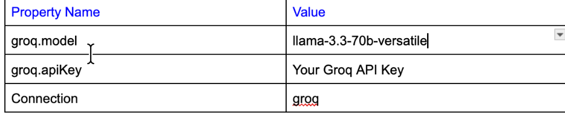